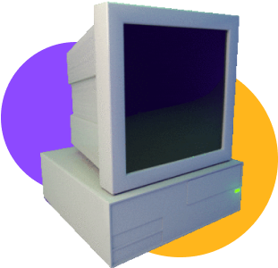

O que é HV?
Imagine um computador hipotético criado com intuito inteiramente didático, dedicado a viabilizar o
ensino
de programação por meio da demonstração básica de seu funcionamento... esse é o HV. Sua linguagem
conta com instruções simples
mas engenhosas, capazes de construir algoritmos complexos e refinados.
Em sua construção, um computador HV possui:
- 100 gavetas
- Calculadora, mostrador e teclado
- Quadro Negro (EPI)
- Porta-cartões
- Folha de saída
- Operador de sistema (CHICO)
A partir da abstração de conceitos sofisticados, o estudante será capaz de assimilar a base de
programação, e ainda adquirir noções
intuitivas de arquitetura de computadores.
O material completo acerca está disponível no link
AQUI.